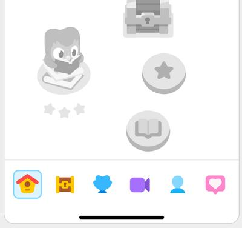
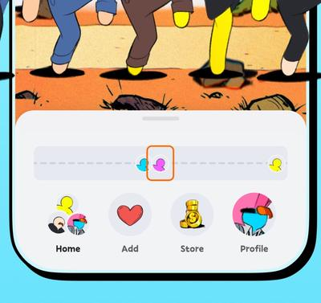
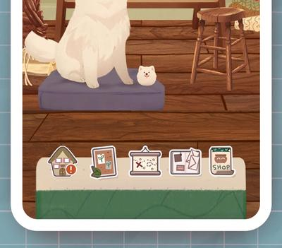
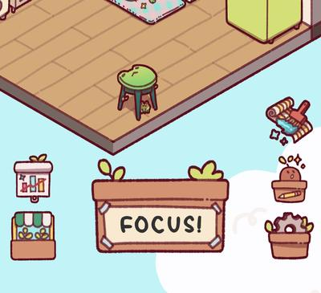
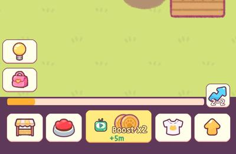
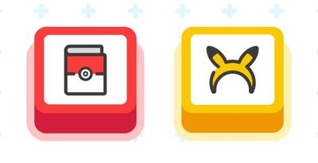
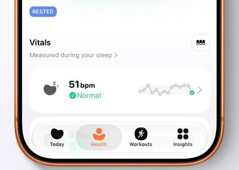
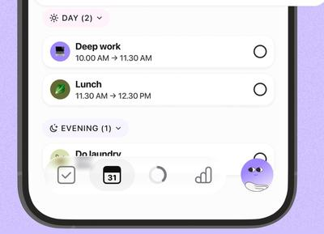
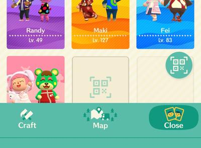

<meta charset="utf-8">
<meta name="viewport" content="width=device-width, initial-scale=1">
<title>Tạ Nhỏ · Bảng tham khảo thanh điều hướng</title>
<style>
  body { margin: 0; background: #faf7f2; color: #25212b; font: 16px/1.55 system-ui, -apple-system, "Segoe UI", Roboto, sans-serif; }
  main { max-width: 440px; margin: 0 auto; padding: 20px 16px 48px; }
  h1 { font-size: 24px; line-height: 1.25; margin: 0 0 8px; }
  h2 { font-size: 19px; line-height: 1.3; margin: 0 0 4px; }
  h3 { font-size: 13px; letter-spacing: .04em; text-transform: uppercase; color: #8a8190; margin: 14px 0 2px; }
  p { margin: 0 0 8px; }
  .lead { color: #5d5665; }
  section { background: #fff; border: 1px solid #ebe4da; border-radius: 16px; padding: 14px; margin: 18px 0; }
  .tag { display: inline-block; font-weight: 700; font-size: 13px; background: #ffc93c; border-radius: 8px; padding: 1px 9px; margin-right: 6px; }
  img { display: block; width: 100%; height: auto; border-radius: 10px; border: 1px solid #ebe4da; margin: 10px 0 4px; }
  .src { font-size: 12.5px; color: #8a8190; margin-bottom: 10px; word-break: break-word; }
  .src a { color: #8a8190; }
  .note { font-size: 13.5px; color: #8a8190; }
  .pick { border-color: #ffc93c; border-width: 2px; }
  ul { margin: 0 0 8px; padding-left: 20px; }
</style>
<main>
  <h1>Thanh điều hướng: 8 hướng tham khảo từ app thật</h1>
  <p class="lead">Chưa có bản vẽ nào của mình ở đây. Tất cả ảnh lấy từ trang cửa hàng hoặc blog chính chủ của app đã phát hành, cắt lấy phần đáy màn hình. A, B, C, F, G là thanh điều hướng thật; D, E, H là hàng nút hoặc menu của game, có ghi rõ ở từng mục. Bạn chọn hướng trước, rồi mới dựng mẫu cho bốn mục Hôm nay · Hội · Tủ đồ · Tôi.</p>
  <p class="note">Ảnh tĩnh không cho thấy chuyển động. Chỗ nào nói về hiệu ứng khi bấm là đề xuất cho Tạ Nhỏ, không phải điều nhìn thấy trong ảnh.</p>

  <section>
    <h2><span class="tag">A</span>Biểu tượng đủ màu, ô sáng viền quanh mục đang chọn</h2>
    
    <p class="src">Duolingo · ảnh từ bài viết chính chủ <a href="https://blog.duolingo.com/core-tabs-redesign/">blog.duolingo.com/core-tabs-redesign</a></p>
    <h3>Vì sao tươi</h3>
    <p>Mỗi mục một màu riêng, vẽ đậm và to, không cần chữ vẫn nhận ra. Mục đang chọn không đổi màu biểu tượng mà được đặt vào một ô bo góc xanh nhạt có viền, nên nhìn là biết ngay đang ở đâu.</p>
    <h3>Sang thế giới nỉ</h3>
    <p>Bốn món nỉ render đủ màu (hộp các-tông, ba cục len của hội, móc áo, mặt bạn đồng hành). Mục đang chọn nằm trong một ô nỉ vàng #FFC93C có đường khâu viền.</p>
    <h3>Công và rủi ro</h3>
    <p>Rẻ nhất: 4 ảnh render, không cần hoạt hình. Rủi ro: render nỉ thu nhỏ dễ nhoè, phải làm hình khối đơn giản và màu đậm hơn hiện tại. Duolingo bỏ chữ; mình nên giữ chữ vì người mới.</p>
  </section>

  <section>
    <h2><span class="tag">B</span>Mỗi mục là một nhân vật trong ô tròn</h2>
    
    <p class="src">Stompers · <a href="https://apps.apple.com/us/app/stompers-walking-step-counter/id6477849675">App Store</a></p>
    <h3>Vì sao tươi</h3>
    <p>Không có biểu tượng trừu tượng nào: mục Home là mấy người bạn, mục Profile là chính avatar của mình. Ô tròn to gần bằng nút bấm, nhãn mục đang chọn in đậm. Thanh trông như một hàng huy hiệu chứ không như thanh công cụ.</p>
    <h3>Sang thế giới nỉ</h3>
    <p>Mục Tôi là mặt bạn đồng hành của mình, đang mặc đúng món đồ trong tủ. Mục Hội là mặt ba bạn chụm lại. Mục đang chọn có vành cam.</p>
    <h3>Công và rủi ro</h3>
    <p>Trung bình. Mục Tôi phải ghép từ lớp render theo từng người (3 bạn × 6 màu × đồ đang mặc) ở cỡ rất nhỏ. Trong ảnh, trạng thái đang chọn của Stompers khá yếu (chỉ chữ đậm), mình cần làm rõ hơn.</p>
  </section>

  <section>
    <h2><span class="tag">C</span>Miếng dán cắt viền đặt trên dải vải</h2>
    
    <p class="src">Kinder World · <a href="https://apps.apple.com/us/app/kinder-world-cozy-plant-game/id1541796687">App Store</a></p>
    <h3>Vì sao tươi</h3>
    <p>Thanh dưới là một vật có thật trong cảnh: một dải vải màu kem nằm trên tấm vải xanh có đường may, trên đó đặt năm miếng dán có viền trắng, hơi nghiêng lệch nhau. Viền trắng làm hình nhỏ vẫn tách khỏi nền. Một miếng có chấm than đỏ báo việc cần làm.</p>
    <h3>Sang thế giới nỉ</h3>
    <p>Gần thế giới Tạ Nhỏ nhất. Thanh dưới là mép hộp các-tông hoặc một dải nỉ, bốn mục là bốn miếng vá nỉ khâu lên. Mục đang chọn là miếng vá đủ màu, nhô lên và nghiêng nhẹ; ba miếng còn lại nằm phẳng, nhạt hơn.</p>
    <h3>Công và rủi ro</h3>
    <p>Trung bình: 4 miếng vá × 2 trạng thái và một dải nền, đều là render tĩnh. Rủi ro: Kinder World không có chữ dưới miếng dán; thêm chữ tiếng Việt vào phải khéo để không rối. Dải vải phải thấp, nếu không sẽ ăn mất chỗ của nút "Vào tập".</p>
  </section>

  <section>
    <h2><span class="tag">D</span>Không có thanh: điều hướng là đồ vật trong cảnh</h2>
    
    <p class="src">Focus Friend, by Hank Green · <a href="https://apps.apple.com/us/app/focus-friend-by-hank-green/id6742278016">App Store</a></p>
    <h3>Vì sao tươi</h3>
    <p>Nút chính là một tấm biển gỗ dán băng dính, mọc lá ở hai góc. Các lối vào khác là sạp hàng, tấm bảng, chậu cây đặt quanh nó. Cả màn hình là một thế giới, không còn lớp "giao diện" phủ lên.</p>
    <h3>Sang thế giới nỉ</h3>
    <p>Bốn mục là bốn món nằm quanh chiếc hộp đồ bỏ quên: tấm nhãn dán trên hộp, cái móc treo đồ, tấm ảnh của hội ghim bên cạnh.</p>
    <h3>Công và rủi ro</h3>
    <p>Đắt và rủi ro nhất. Kiểu này hợp với app xoay quanh một cảnh chính; Tạ Nhỏ có 96 màn, người dùng cần biết mình đang ở mục nào ở mọi màn. Đồ vật không có nhãn thì người mới khó đoán. Hợp để lấy ý cho riêng màn Hôm nay hơn là cho thanh điều hướng.</p>
  </section>

  <section>
    <h2><span class="tag">E</span>Nút khối dày, có độ lún khi bấm</h2>
    
    <p class="src">Cat Snack Bar · <a href="https://apps.apple.com/us/app/cat-snack-bar-food-games/id6443895159">App Store</a> (đây là hàng nút của game, nút vàng ở giữa là nút tăng tốc, không phải mục đang chọn)</p>
    
    <p class="src">Pokémon Smile · <a href="https://apps.apple.com/us/app/pok%C3%A9mon-smile/id1512331079">App Store</a> (nút trên màn chính, không phải thanh dưới; đưa vào để thấy độ dày của nút)</p>
    <h3>Vì sao tươi</h3>
    <p>Mỗi mục là một phím bấm có cạnh dày và viền đậm, nằm trên một dải màu tối nên nổi hẳn lên. Nút giữa to hơn các nút khác. Nhìn là muốn ấn.</p>
    <h3>Sang thế giới nỉ</h3>
    <p>Cùng họ với nút cam "Vào tập" đang có (đã có cạnh dày bên dưới). Bốn mục là bốn phím nỉ dày; mục đang chọn là phím đang lún xuống và đổi sang vàng.</p>
    <h3>Công và rủi ro</h3>
    <p>Thấp đến trung bình: khối phím làm bằng CSS được, chỉ biểu tượng cần render. Rủi ro: bốn phím dày ngay dưới nút "Vào tập" sẽ tranh sự chú ý với nó, và dễ ngả sang chất game hơn là chất nỉ ấm.</p>
  </section>

  <section>
    <h2><span class="tag">F</span>Viên thuốc nổi, vệt sáng dưới mục đang chọn</h2>
    
    <p class="src">Gentler Streak · <a href="https://apps.apple.com/us/app/gentler-streak-workout-tracker/id1576857102">App Store</a></p>
    <h3>Vì sao tươi</h3>
    <p>Thanh tách khỏi mép dưới, bo tròn hết cỡ, nội dung trôi phía sau. Mục đang chọn nằm trong một vệt nhạt hình viên thuốc và là mục duy nhất có màu cam của thương hiệu. Sạch, hiện đại, đọc rất rõ.</p>
    <h3>Sang thế giới nỉ</h3>
    <p>Một dải nỉ kem bo tròn nổi trên nền. Dưới mục đang chọn là một cục len vàng, trượt và nảy sang mục mới khi bấm.</p>
    <h3>Công và rủi ro</h3>
    <p>Thấp: biểu tượng một màu, không cần render, hiệu ứng trượt làm bằng CSS. Rủi ro: đây là kiểu của iOS mới, đẹp nhưng không riêng; ít chất Tạ Nhỏ nhất trong tám hướng.</p>
  </section>

  <section>
    <h2><span class="tag">G</span>Thanh nhỏ gọn, linh vật đứng riêng một góc</h2>
    
    <p class="src">Tiimo · <a href="https://apps.apple.com/us/app/tiimo-to-do-list-planner/id1480220328">App Store</a></p>
    <h3>Vì sao tươi</h3>
    <p>Các mục thường là biểu tượng nét mảnh, rất nhẹ. Toàn bộ cá tính dồn vào một chỗ: quả cầu tím có mắt, to hơn và nhô khỏi thanh. Mục đang chọn có nền nhạt bo tròn.</p>
    <h3>Sang thế giới nỉ</h3>
    <p>Ba mục là biểu tượng đơn giản; mục Tôi là bạn đồng hành của mình ló đầu lên khỏi thanh, mắt nhìn theo mục đang chọn.</p>
    <h3>Công và rủi ro</h3>
    <p>Thấp đến trung bình: chỉ một hình render (mặt bạn đồng hành, 3 bạn × 6 màu). Rủi ro: ba mục nét mảnh lại rơi về đúng cái đang bị chê (nhỏ, xám, nhạt) nếu không làm đậm lên.</p>
  </section>

  <section>
    <h2><span class="tag">H</span>Dải màu đặc, mục nổi bật nằm trong viên đậm hơn</h2>
    
    <p class="src">Animal Crossing: Pocket Camp Complete · <a href="https://apps.apple.com/us/app/animal-crossing-pocket-camp-c/id6547834967">App Store</a> (thanh menu của game; trong ảnh này viên đậm nằm ở nút Close)</p>
    <h3>Vì sao tươi</h3>
    <p>Thanh không trắng mà là một dải màu đặc, biểu tượng và chữ màu trắng kem, chữ tròn và to. Một mục được bọc trong viên bo tròn đậm hơn, biểu tượng trong đó có thêm màu. Ấm và thân thiện mà vẫn rất dễ đọc.</p>
    <h3>Sang thế giới nỉ</h3>
    <p>Thanh là một dải nỉ màu (nâu các-tông hoặc xanh của Khăn) thay cho nền trắng. Mục đang chọn nằm trong viên nỉ vàng, biểu tượng đủ màu.</p>
    <h3>Công và rủi ro</h3>
    <p>Thấp: chủ yếu là màu và chữ, 4 biểu tượng. Rủi ro: dải màu đậm ở đáy làm màn hình nặng phần dưới và phải thử lại với nền kem của mọi màn đã duyệt.</p>
  </section>

  <section class="pick">
    <h2>Đề xuất: C và A</h2>
    <p><b>1. Hướng C (miếng vá nỉ trên dải vải).</b> Đây là hướng duy nhất mà thanh điều hướng tự nó thuộc về thế giới đồ bỏ quên, chứ không phải giao diện đặt lên trên. Nó cũng chữa đúng hai lỗi của bản hiện tại: viền quanh miếng vá giữ cho hình nhỏ không nhoè thành mảng xám, và mục đang chọn khác hẳn (đủ màu, nhô lên) thay vì chỉ đậm hơn. Toàn bộ là render tĩnh, không cần hoạt hình mới đẹp.</p>
    <p><b>2. Hướng A (biểu tượng đủ màu, ô vàng quanh mục đang chọn).</b> Phương án an toàn: đã được Duolingo chứng minh là dễ đọc, ít công nhất, và ô vàng khớp sẵn với màu thương hiệu. Kém C ở chỗ thanh vẫn là thanh trắng.</p>
    <p class="note">Ý của hướng B (mục Tôi là chính bạn đồng hành của mình, đang mặc đồ trong tủ) ghép được vào cả C lẫn A, nên có thể chọn thêm mà không phải đổi hướng.</p>
  </section>

  <p class="note">Đã tìm nhưng không có ảnh thanh dưới trên trang cửa hàng: Finch, Pokémon Sleep, Habitica, Forest, Neko Atsume, Toca Boca, Clash Royale, Royal Match. Không đưa vào để tránh tả theo trí nhớ. Ảnh thuộc về các nhà phát hành tương ứng, chỉ dùng để tham khảo nội bộ.</p>
</main>
